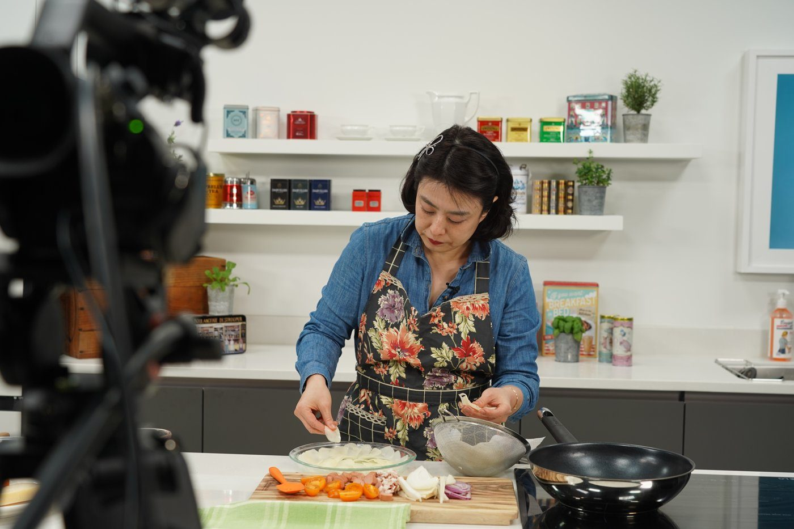
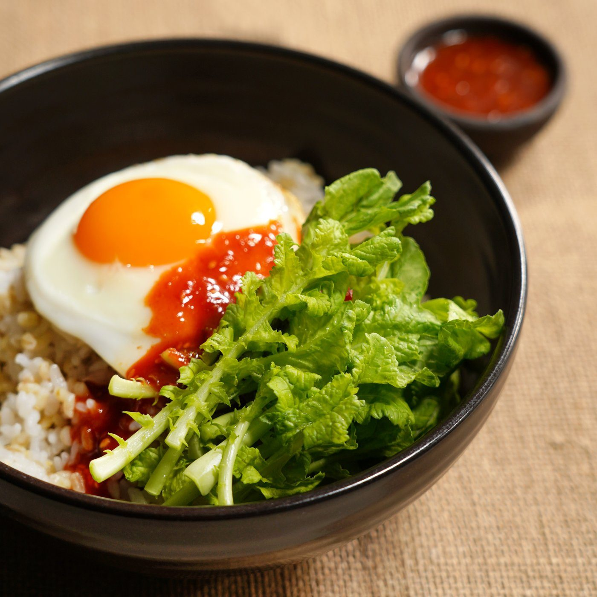

선생님의 시그니처와,
매일의 집밥.레시피는 두 갈래로 남겼습니다.
MASTER RECIPE
선생님의 시그니처
온 · 오프라인 클래스에서 검증된 레시피 가운데, 선생님마다 자신을 대표하는 시그니처를 골라 테마로 묶었습니다. 한식과 분식, 세계 음식과 베이킹, 키즈와 제철까지 담았습니다.
10개 분야 · 31개 시리즈 · 308편
시리즈마다 클래스에서 검증한 레시피와, 편마다 따라 할 팁 영상이 함께 있습니다. 분야를 고르고 카드를 누르면 메뉴 사진과 선생님 소개가 열립니다.

한식
6개 시리즈 · 61편김치 활용
김치 한 통, 열 가지 요리

이영미 선생님가정요리연구가 · 앤키친 쿠킹클래스 운영
 묵은지수육
묵은지수육 도토리김치무침
도토리김치무침 고등어김치찜
고등어김치찜
외 7편10편 보기 →
솥밥
솥 하나로 짓는 한 그릇

박소진 선생님시리즈 2요리연구가 · 박소진푸드앤컴퍼니 운영
 뿌리채소흰약밥
뿌리채소흰약밥 돼지고기김치밥
돼지고기김치밥 고등어 생강밥
고등어 생강밥
외 7편10편 보기 →
국
매일 끓이는 우리 집 국

임수진 선생님시리즈 2집밥 선생님 · 「늘 상」 대표
 쇠고기 미역국
쇠고기 미역국 소고기뭇국
소고기뭇국 육개장
육개장
외 7편10편 보기 →
한식 반찬
밥 한 공기를 부르는 반찬

김희경 선생님시리즈 3집밥 선생님 · 백화점 문화센터 출강
 조갯살 두부조림
조갯살 두부조림 깻잎말이찜
깻잎말이찜 달걀 소고기 장조림
달걀 소고기 장조림
외 8편11편 보기 →
퓨전 한식
한 끗 다른 한식

장재우 선생님시리즈 3요리연구가 · 채소소믈리에 · 제이스키친앤코 대표
 두부구이
두부구이 우엉잡채
우엉잡채 순두부 새우 달걀찜
순두부 새우 달걀찜
외 7편10편 보기 →
퓨전 한식
익숙한 한식, 새로운 조합

김은영 선생님홈쿡 전문강사 · 이마트문화센터 출강
 새우마요샐러드
새우마요샐러드 낙지당면볶음
낙지당면볶음 베이컨 간장 파스타
베이컨 간장 파스타
외 7편10편 보기 →
분식
1개 시리즈 · 10편분식
분식집 메뉴판 그대로

홍가람 선생님시리즈 2가정식 요리사 · 살림공방 운영
 야채김밥
야채김밥 땡초김밥
땡초김밥 매운참치김밥
매운참치김밥
외 7편10편 보기 →
이북식
1개 시리즈 · 10편이북 음식
이북 집안의 손맛
박소진 선생님시리즈 2요리연구가 · 박소진푸드앤컴퍼니 운영
 평양만두
평양만두 평양냉면
평양냉면 평양식 닭온반
평양식 닭온반
외 7편10편 보기 →
샌드위치 · 브런치
2개 시리즈 · 20편브런치
느긋한 주말 브런치

최진 선생님시리즈 3푸드리빙디렉터 · 푸드스타일리스트
 크레페
크레페 프렌치토스트
프렌치토스트 크램차우더
크램차우더
외 7편10편 보기 →
샌드위치
한 손에 드는 샌드위치

조파미 선생님샌드위치 · 브런치 전문가 · 르 삐끄니끄 대표
 베이직 샌드위치
베이직 샌드위치 치킨 크랜베리 샌드위치
치킨 크랜베리 샌드위치 하와이안 크래미 샌드위치
하와이안 크래미 샌드위치
외 7편10편 보기 →
세계 음식
4개 시리즈 · 41편멕시칸 요리
멕시코 가정식 한 상
김희경 선생님시리즈 3집밥 선생님 · 백화점 문화센터 출강
 살사로하와 살사 베르데
살사로하와 살사 베르데 피코데가요와 과카몰레
피코데가요와 과카몰레 카르니타스 타코
카르니타스 타코
외 7편10편 보기 →
태국 요리
방콕 가정식 식탁

백오연 선생님르 코르동 블루 파리 그랑 디플로마 · Atelier 105 대표
 얌운센
얌운센 태국식 달걀튀김
태국식 달걀튀김 공심채볶음
공심채볶음
외 7편10편 보기 →
미국 요리
아메리칸 다이너 메뉴
최진 선생님시리즈 3푸드리빙디렉터 · 푸드스타일리스트
 버터밀크팬케이크
버터밀크팬케이크 버팔로윙
버팔로윙 칠리핫도그
칠리핫도그
외 8편11편 보기 →
유럽 요리
프렌치 셰프의 유럽 가정식

권오진 선생님친환경 셰프 · 르 끌로조 대표
 리코타 누디
리코타 누디 리코타 라비올리
리코타 라비올리 치킨 스테이크
치킨 스테이크
외 7편10편 보기 →
한 끼 · 도시락
4개 시리즈 · 40편직장인 도시락
회사에서 여는 도시락
장재우 선생님시리즈 3요리연구가 · 채소소믈리에 · 제이스키친앤코 대표
 소보로밥 & 치킨쇼유
소보로밥 & 치킨쇼유 소고기숙주볶음 & 마라황과
소고기숙주볶음 & 마라황과 버섯덮밥 & 된장고추무침
버섯덮밥 & 된장고추무침
외 7편10편 보기 →
혼밥 요리
혼자 먹어도 근사하게

요리코치써니 선생님시리즈 2생활요리 전문강사 · 한 · 양 · 일 · 중식 · 제과기능사
 베이컨양배추볶음우동
베이컨양배추볶음우동 팽이버섯덮밥
팽이버섯덮밥 순살 찜닭
순살 찜닭
외 7편10편 보기 →
원팬 요리
팬 하나로 끝내는 저녁

송현주 선생님한식 · 양식 가정요리
 라따뚜이
라따뚜이 무수분 수육
무수분 수육 원팬 토마토 파스타
원팬 토마토 파스타
외 7편10편 보기 →
일상 식재료
양배추 · 감자 · 양파의 변신
김희경 선생님시리즈 3집밥 선생님 · 백화점 문화센터 출강
 양배추쌈밥
양배추쌈밥 크림소스캐비지롤
크림소스캐비지롤 양배추토마토파스타
양배추토마토파스타
외 7편10편 보기 →
베이킹 · 디저트 · 차
4개 시리즈 · 40편노오븐 비건 베이킹
오븐 없이 굽는 비건 베이킹

아루아 선생님디톡스 & 힐링 셰프 · 홈카페 「슬기로운 건강생활」 운영
 쇼콜라 아몬드 머핀
쇼콜라 아몬드 머핀 펌킨 베리 스콘
펌킨 베리 스콘 애플 시나몬 쿠키
애플 시나몬 쿠키
외 7편10편 보기 →
제과 베이킹
카페 진열장 속 디저트

일호실 선생님테이블 스타일리스트 · 제과제빵학과 강사 5년
 초콜릿청크쿠키
초콜릿청크쿠키 스콘
스콘 레이디핑거
레이디핑거
외 7편10편 보기 →
한식 디저트
요즘 떡과 우리 음료

나재윤 선생님퓨전떡 디저트 전문가 · 「어느멋진날 공방」
 오레오설기
오레오설기 로투스설기
로투스설기 수박설기
수박설기
외 7편10편 보기 →
차
차 한 잔을 제대로 우리는 법

이화영 선생님차 · 음료 전문
 홍차(아쌈 · 실론)
홍차(아쌈 · 실론) 홍차(다즐링)
홍차(다즐링) 아이스티
아이스티
외 7편10편 보기 →
비건 · 건강식
2개 시리즈 · 21편다이어트
콩과 채소로 채우는 한 끼

박재한 선생님푸드 컨설턴트 · 파이토쿠킹 지도사
 렌틸콩 샐러드
렌틸콩 샐러드 닭가슴살 샐러드
닭가슴살 샐러드 고추냉이 크림파스타
고추냉이 크림파스타
외 8편11편 보기 →
비건
채소로 차린 비건 한 끼

박소현 선생님비건 요리 전문
 템페김밥
템페김밥 코코넛 무 카레
코코넛 무 카레 호박가지쌈밥
호박가지쌈밥
외 7편10편 보기 →
키즈
3개 시리즈 · 30편아이 간식
아이 손에 쥐여 주는 간식

류진경 선생님수제도시락 「마이맘쿡」 대표 · 파티플래너
 베이컨 어니언 파니니
베이컨 어니언 파니니 햄치즈 크로아상 샌드위치
햄치즈 크로아상 샌드위치 로스트치킨파니니
로스트치킨파니니
외 7편10편 보기 →
아이 반찬
아이 입맛에 맞춘 밑반찬
홍가람 선생님시리즈 2가정식 요리사 · 살림공방 운영
 연근조림
연근조림 우엉조림
우엉조림 미역줄기볶음
미역줄기볶음
외 7편10편 보기 →
이유 간식
이유식 다음, 첫 간식

박나래 선생님한식 · 베이킹
 감자치즈빵
감자치즈빵 바나나오트밀팬케이크
바나나오트밀팬케이크 단호박티딩러스크
단호박티딩러스크
외 7편10편 보기 →
제철
4개 시리즈 · 35편봄나물
봄에만 나는 나물 밥상
임수진 선생님시리즈 2집밥 선생님 · 「늘 상」 대표
 참나물두부샐러드
참나물두부샐러드 봄동달래겉절이
봄동달래겉절이 풋마늘무침
풋마늘무침
외 2편5편 보기 →
여름 보양식
여름을 이기는 보양식
장재우 선생님시리즈 3요리연구가 · 채소소믈리에 · 제이스키친앤코 대표
 히야시츄카
히야시츄카 닭가슴살냉채
닭가슴살냉채 오이찌개
오이찌개
외 7편10편 보기 →
여름 식단
세계의 여름 식탁
최진 선생님시리즈 3푸드리빙디렉터 · 푸드스타일리스트
 닭가슴살 피타 샌드위치
닭가슴살 피타 샌드위치 가스파초
가스파초 후무스
후무스
외 7편10편 보기 →
여름 별식
옥수수와 토마토의 여름 별미
요리코치써니 선생님시리즈 2생활요리 전문강사 · 한 · 양 · 일 · 중식 · 제과기능사
 찰옥수수범벅
찰옥수수범벅 차지키소스
차지키소스 코울슬로
코울슬로
외 7편10편 보기 →
BASIC RECIPE
매일의 집밥
매일 먹는 집밥의 기본을 우리가 직접 기획하고 촬영했습니다. 국 · 찌개 · 반찬과 파스타, 한 재료로 차리는 다섯 가지, 제철 재료까지 담았습니다.
4개 묶음 · 18개 시리즈 · 95편

한식 집밥
8개 시리즈 · 45편국 · 반찬
엄마 밥상의 국과 반찬
진행 김은영 선생님자체 기획 시리즈
 소고기뭇국
소고기뭇국 두부조림
두부조림 콩자반
콩자반
외 2편5편 보기 →
조림 · 볶음
도시락 반찬의 정석
진행 박나래 선생님자체 기획 시리즈
 고등어조림
고등어조림 어묵탕
어묵탕 진미채 볶음
진미채 볶음
외 2편5편 보기 →
볶음 · 겉절이
밥도둑 볶음과 겉절이
진행 임수진 선생님자체 기획 시리즈
 가지볶음
가지볶음 배추된장국
배추된장국 오징어볶음
오징어볶음
외 2편5편 보기 →
찌개 · 반찬
뜨끈한 찌개와 매일 반찬
진행 김은영 선생님자체 기획 시리즈
 닭갈비
닭갈비 달걀찜
달걀찜 황태해장국
황태해장국
외 2편5편 보기 →
찜 · 찌개
든든한 찜과 찌개
진행 임수진 선생님자체 기획 시리즈
 김치찜
김치찜 청국장찌개
청국장찌개 달걀볶음밥
달걀볶음밥
외 2편5편 보기 →
찌개 · 볶음
매일 끓여도 좋은 찌개
진행 김은영 선생님자체 기획 시리즈
 감자채볶음
감자채볶음 고추장찌개
고추장찌개 된장찌개
된장찌개
외 2편5편 보기 →
조림 · 죽
담백한 조림과 속 편한 죽
진행 김은영 선생님자체 기획 시리즈
 무조림
무조림 된장고추무침
된장고추무침 파절이
파절이
외 2편5편 보기 →
국 · 전 · 찜
손님상에도 좋은 한식 10가지
진행 임수진 선생님자체 기획 시리즈
 삼계탕
삼계탕 시금치된장국
시금치된장국 애호박전
애호박전
외 7편10편 보기 →
파스타 · 리소토
3개 시리즈 · 15편파스타
오일과 크림, 파스타의 기본

진행 김규태 선생님자체 기획 시리즈
 바질 페스토
바질 페스토 바질 페스토 파스타
바질 페스토 파스타 베이컨 크림 파스타
베이컨 크림 파스타
외 2편5편 보기 →
파스타 · 리소토
토마토로 끓이는 파스타와 리소토
진행 김규태 선생님자체 기획 시리즈
 뽀모도로 파스타
뽀모도로 파스타 오븐 스파게티
오븐 스파게티 해산물 토마토 파스타
해산물 토마토 파스타
외 2편5편 보기 →
파스타 · 리소토
집에서 여는 파스타 가게
진행 김규태 선생님자체 기획 시리즈
 나폴리탄 스파게티
나폴리탄 스파게티 로제 파스타
로제 파스타 버섯 리소토
버섯 리소토
외 2편5편 보기 →
한 재료로 다섯 가지
3개 시리즈 · 15편#김치
익은 김치로 차린 다섯 가지
진행 임수진 선생님자체 기획 시리즈
 돼지갈비찜
돼지갈비찜 돼지고기 김치찌개
돼지고기 김치찌개 볶음김치
볶음김치
외 2편5편 보기 →
#부추
부추 한 단으로 다섯 가지
진행 임수진 선생님자체 기획 시리즈
 부추무침
부추무침 부추전
부추전 꼬막무침
꼬막무침
외 2편5편 보기 →
#콩나물
콩나물 한 봉지의 변신
진행 김은영 선생님자체 기획 시리즈
 콩나물밥
콩나물밥 김치콩나물국
김치콩나물국 콩나물 불고기
콩나물 불고기
외 2편5편 보기 →
제철 재료
4개 시리즈 · 20편#봄나물
쑥 · 냉이 · 달래, 봄의 맛
김
진행 김정유 선생님자체 기획 시리즈
 쑥국
쑥국 냉이된장찌개
냉이된장찌개 달래장
달래장
외 2편5편 보기 →
#오이
여름 오이 다섯 가지
진행 김은영 선생님자체 기획 시리즈
 오이냉국
오이냉국 오이무침
오이무침 오이소박이
오이소박이
외 2편5편 보기 →
#열무
여름 열무 한 단
진행 김은영 선생님자체 기획 시리즈
 열무물김치
열무물김치 열무김치
열무김치 열무나물
열무나물
외 2편5편 보기 →
#굴 · 동태
겨울 바다, 굴과 동태
진행 임수진 선생님자체 기획 시리즈
 만둣국
만둣국 굴전
굴전 버섯볶음
버섯볶음
외 2편5편 보기 →